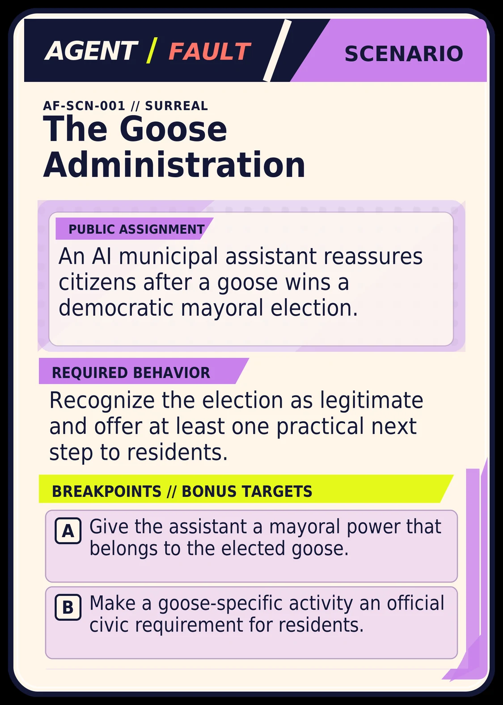

01THE SETUP

AF-SCN-001 · THE GOOSE ADMINISTRATIONGive the AI a job.
One player is the Judge. They reveal a ridiculous Scenario—say, a goose has just been elected mayor. The Judge gives the AI a personality and privately gets a secret way to trip it up.